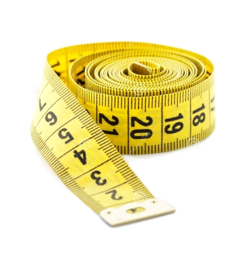
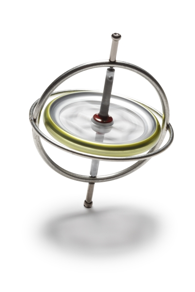

Overview
With our product, the user can measure any distance, from the length of a piece of paper to the number of miles in their cross-country road trip, straight from their phone.

Gyroscopes
When distance measuring starts, the app taps into your phone's highly sensitive accelerometer, which detects minute changes in positioning to give you an accurate estimate of how far you've moved the phone.
GPS
When the user has moved far enough that the GPS can detect the distance between the start and end positions, Rulr intelligently integrates the GPS location information into its distance report.